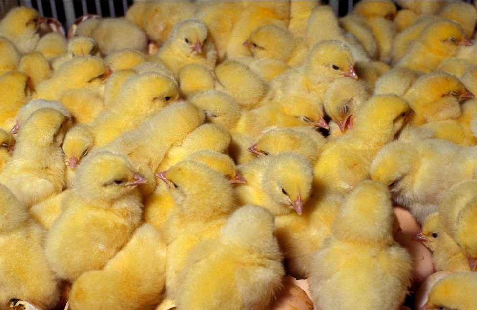
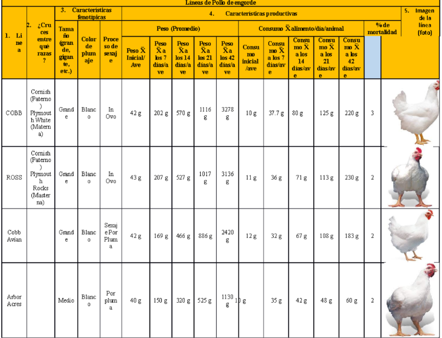

Simulador de Condiciones
Ajusta los parámetros y observa cómo afectan el desarrollo de tus pollos
Sistema de Fases Científicas
Fase de Inicio (Cría) - Día 1 al 14
Fundación del sistema inmunológico y digestivo

Aspectos Críticos
- Temperatura constante 32-35°C
- 23 horas de luz primera semana
- Enseñar a comer y beber activamente
- Sistema inmune inmaduro
Programa de Salud
- Día 1-5: Multivitamínico en agua
- Día 6-8: Amoxicilina preventiva
- Día 14-16: Anticoccidial
- Monitorear mortalidad diaria (<2%)
Indicadores de Éxito
- Peso día 7: 180-200g
- Buches llenos al 95%
- Distribución uniforme en galpón
- Mortalidad < 2%
Fase de Crecimiento - Día 15 al 28
Desarrollo muscular, óseo y sistema inmunológico

Aspectos Críticos
- Control de densidad (12 pollos/m²)
- Ventilación adecuada para amoníaco
- Prevención de coccidiosis
- Cambio a alimento crecimiento
Crecimiento Esperado
- Peso día 21: 900-1000g
- Incremento diario: 45-50g
- Consumo diario: 85-100g/pollo
- Conversión alimenticia: 1.5-1.6
Ajustes de Manejo
- Subir comederos y bebederos
- Reducir horas de luz a 18-20
- Bajar temperatura a 24-26°C
- Remover cama húmeda
Fase de Engorde - Día 29 al 42
Acumulación de grasa y peso final optimizado

Riesgos Principales
- Estrés por calor
- Problemas respiratorios
- Cojeras por sobrepeso
- Cama húmeda
Optimización Alimenticia
- Alimento finalizador (18-20% proteína)
- Conversión objetivo: 1.7-1.8
- Consumo diario: 160-180g/pollo
- Ganancia diaria: 60-70g
Control de Ambiente
- Temperatura: 20-22°C
- Ventilación máxima
- Humedad: 60-70%
- Luz: 16-18 horas
Fase Final (Pre-venta) - Día 43 al 45
Preparación para sacrificio y optimización de calidad

Consideraciones Finales
- Respetar período de retiro de medicamentos
- Ayuno de 8-12 horas antes del sacrificio
- Reducción de estrés por manejo
- Peso objetivo: 2.8-3.2 kg
Evaluación Final del Lote
- Uniformidad del lote (>85%)
- Conversión alimenticia final
- Mortalidad acumulada (<5%)
- Índice de productividad
Indicadores de Calidad
- Plumas limpias y completas
- Patas sanas sin lesiones
- Sin problemas respiratorios
- Ojos brillantes y activos
Comparador Científico de Fases

| Parámetro | Fase 1 | Fase 2 | Fase 3 | Fase 4 |
|---|---|---|---|---|
| Temperatura | 32-35°C | 24-26°C | 20-22°C | Ambiente |
| Proteína alimento | 22-24% | 20-22% | 18-20% | N/A |
| Consumo diario | 15-25g | 85-100g | 160-180g | 0g (ayuno) |
| Horas de luz | 23 horas | 18-20 horas | 16-18 horas | Natural |
| Espacio mínimo | 0.05 m²/pollo | 0.08 m²/pollo | 0.10 m²/pollo | 0.12 m²/pollo |
| Humedad ideal | 60-70% | 50-60% | 60-70% | 40-50% |
| Ventilación | Mínima | Moderada | Máxima | Normal |
Diagnóstico y Solución de Problemas
Pollos amontonados
Diagnóstico: Frío o corriente de aire
Solución: Aumentar temperatura 2-3°C, verificar cortinas y calefactores
Cama húmeda
Diagnóstico: Exceso de humedad o mala ventilación
Solución: Mejorar ventilación, añadir viruta seca, revisar bebederos
Bajo consumo de alimento
Diagnóstico: Estrés, enfermedad o mala calidad de alimento
Solución: Revisar salud, temperatura, y calidad del alimento
Problemas respiratorios
Diagnóstico: Alta concentración de amoníaco
Solución: Aumentar ventilación, cambiar cama, reducir humedad